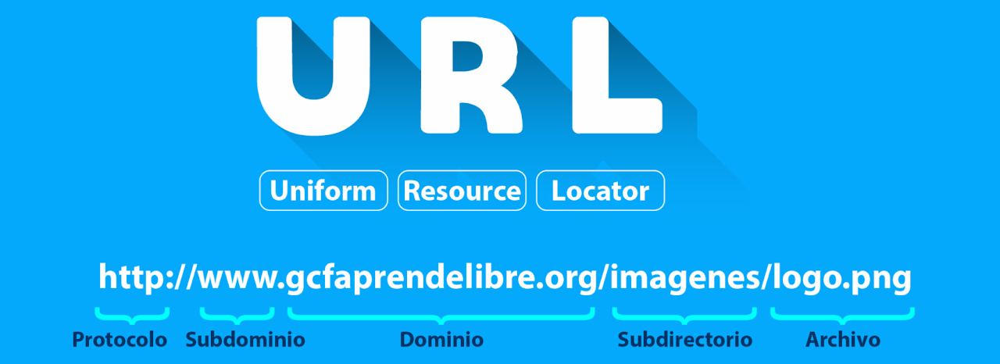
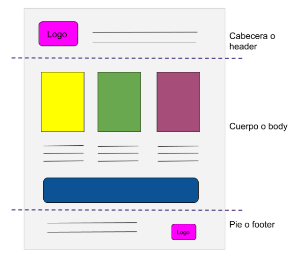
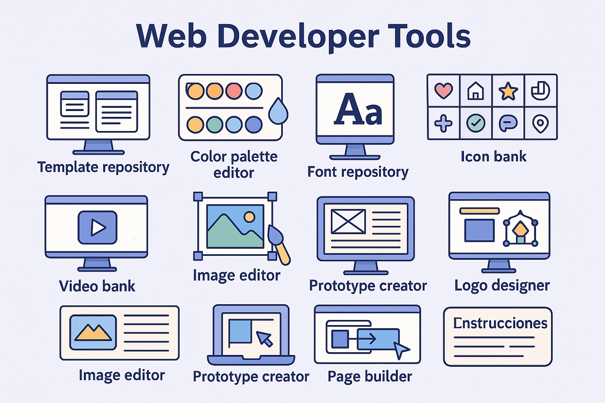
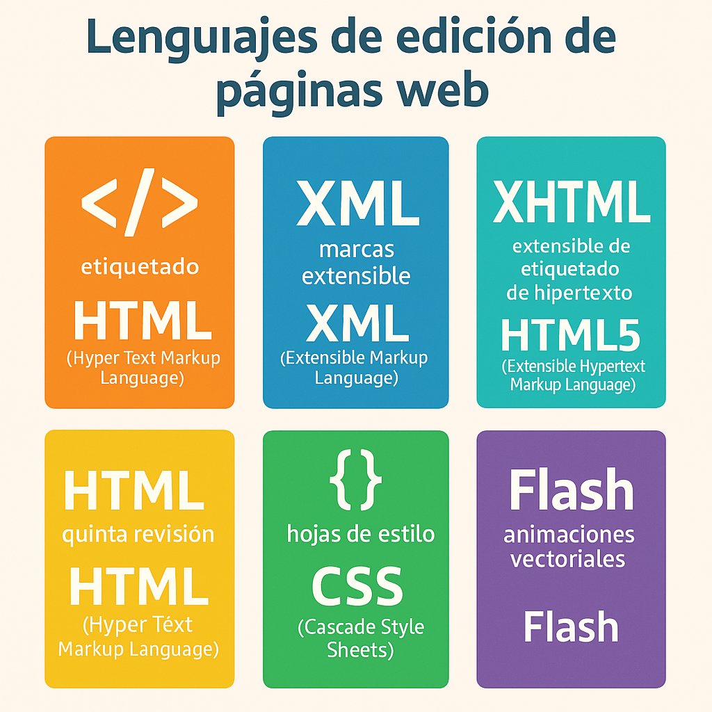

1. INTRODUCCIÓN A LAS PÁGINAS WEB
1. INTRODUCCIÓN A LAS PÁGINAS WEB
1.1 ¿Qué es una página web?
🌐 Internet se ha convertido en una auténtica "ventana al mundo". Hoy en día, prácticamente todas las empresas, instituciones y profesionales cuentan con su propia página web para darse a conocer, compartir información o vender productos.
💡 Dato curioso: ¡El desarrollo web es una de las profesiones más demandadas del siglo XXI!
Una página web es un documento digital accesible desde un navegador, que puede incluir:
- 📝 Texto y enlaces
- 🖼️ Imágenes y vídeos
- 🔊 Sonido
- 🧩 Programas o scripts
- 🎨 Estilos visuales (CSS)
Estas páginas están escritas normalmente en HTML y pueden enlazarse entre sí gracias al hipertexto. Todo esto forma parte de la WWW.
📂 Las páginas pueden estar:
- 📁 En un ordenador local
- 🌍 En un servidor web remoto, accesible desde cualquier parte del mundo
La información viaja por Internet gracias al protocolo HTTP, que permite la transferencia entre navegador y servidor.
🔎 ¿Cómo accedemos a una página web?
Escribimos su URL (Uniform Resource Locator) en la barra de direcciones del navegador. Cada página tiene su propia dirección única, como si fuera su “DNI digital”.
(Partes que componen una URL)

🧩 Partes de una URL:
| Elemento | Descripción |
|---|---|
| Protocolo | Conjunto de reglas (normalmente http o https) que el navegador sigue para acceder al sitio. |
| Subdominio | Suele ser www, aunque puede variar (blog, mail, etc.). |
| Dominio | Nombre del sitio web (como mipagina.com). |
| Subdirectorio | Carpeta dentro del dominio (por ejemplo: /recursos/). |
| Archivo | Página concreta que se va a mostrar (index.html, contacto.html, etc.). |
1.1 Servidores web
Cuando visitas una página web, los datos por los que navegas han de estar almacenados en algún sitio para que puedas acceder. En lugar de guardarlos en el ordenador del creador del sitio (esto supondría muchos problemas para el mismo), lo que se hace es utilizar servidores web en los que se alojan todos los datos, así que te vendrá bien saber aumentar velocidad de un ordenador. Por tanto, un servidor web es un ordenador especialmente preparado para estar encendido las 24 horas del día los 365 días del año.
💡 Curiosidad: Un solo servidor puede alojar cientos de webs de todo el mundo.
Gracias al protocolo HTTP, tu navegador solicita las páginas al servidor y las descarga para que puedas verlas. Así accedes a cualquier web desde cualquier dispositivo.
🎥 En el siguiente vídeo descubrirás cómo funciona un servidor web:
📝 ACTIVIDADES (1)
- ¿Qué es una página web?
- ¿En qué consiste el protocolo HTTP?
- ¿Para qué utilizan las Cookies los navegadores web?
- ¿Qué es la dirección URL y de qué partes se compone?
- Busca nombres de protocolo distintos de http.
- ¿Qué es un servidor web y para qué se utilizan?
1.2 Estructura básica de una página web
En la estructura de una página web tenemos tres partes diferenciadas: cabecera, cuerpo y pie de página. O, por sus términos en inglés: header, body y footer.
📌 Cabecera (header)
La cabecera es la parte superior de la página web. Aquí suele incluirse la información básica de la empresa o marca y es consistente en todo el sitio, es decir, se repite en cada página de la web por la que navegas.
Los elementos que se incluyen en la cabecera son:
- Logo de la empresa
- Menú de navegación
- Buscador
- Descripción breve del sitio
📄 Cuerpo (body)
Esta es la parte de la web que alberga el contenido principal de tu página. Esta parte sí es diferente en cada página de tu sitio. Es decir, no será el mismo contenido el que incluyes en tu página de contacto que en la página principal.
📌 Pie de página (footer)
El pie de página o footer es la parte inferior de una página web. Al igual que la cabecera, se repite y es consistente en cada página. En el footer podemos encontrar los siguientes elementos:
- Menú simplificado
- Redes sociales
- Política de privacidad
- Logo de la empresa
- Contacto
- Enlace a la política de privacidad

1.3 Herramientas para desarrolladores web
Para editar una página web se necesitan varias herramientas variadas, ya que se trata de mezclar letras, colores, fondos, fotos, dibujos, vídeos, etc. en una sola pagina, por eso, un editor de páginas web debe tener y dominar varias herramientas digitales, como son::
- 🪠 Repositorio de plantillas: Sitio web con plantillas de páginas web, para utilizarlas o basarse en las mismas.
- 🎨 Paletas de colores: Programa creador de la paleta de colores de la página.
- 🔠 Tipografías: Sitio de fuentes o tipos de letra.
- 📷 Bancos de imágenes: Páginas desde las que exportar imágenes para la página web (Hay sitios de pago y sitios gratuitos).
- 📐 Bancos de iconos: Página repleta de icono para la página clasificados en distintas categorías y diseños.
- 🎥 Bancos de vídeos: Recopilatorio de vídeos y animaciones (También podemos encontrar vídeos de pago y vídeos gratuitos).
- 🎨 Editores de imagen: Programa manipulador de imágenes (Para recortarlas, girarlas, cambiar colores, incluir letreros, etc.).
- 🔍 Creador de prototipos: Webs donde podemos hacer un boceto de la estructura de la web (Mookup).
- 📏 Maquetadores visuales: Es el sitio donde creamos la página (Page builder).
- 🚀 Diseñadores de logos: Webs donde podemos crear el logotipo de la web o empresa fácilmente.

1.4 Lenguajes de edición de páginas web
Aunque actualmente existen sitios en la web donde construir páginas arrastrando boques de texto, imágenes, etc. como Google Sites, Wix, weebly..., son sitios con opciones muy cerradas, que no permiten hacer páginas personalizadas ni originales, sino que todas tienen un aspecto similar.
Si lo que se quiere es crear una página web a medida, original y distinta a las demás, hay que construirla mediante un lenguaje de edición. Los lenguajes de edición de páginas web más utilizados hoy en día son:
- HTML: Estructura de la web
- XML: Intercambio de datos
- XHTML: Mezcla HTML + XML
- HTML5: Versión actual con mejor accesibilidad
- CSS: Diseño y estilo visual
- Flash: (Antiguo) Para animaciones y contenido interactivo

📝 ACTIVIDADES (2)
- ¿Qué es la cabecera, el cuerpo y el pie de página de una web? ¿Qué suele contener?
- Busca en Internet cada una de las herramientas de desarrollo web vistas e indica el nombre de al menos una de cada tipo.
- ¿Cuáles son los lenguajes de edición web más importantes?
- Entra en Canva y diseña tu propio logotipo con tu nombre. https://www.canva.com/es_es/crear/logos/
Obra publicada con Licencia Creative Commons Reconocimiento Compartir igual 4.0